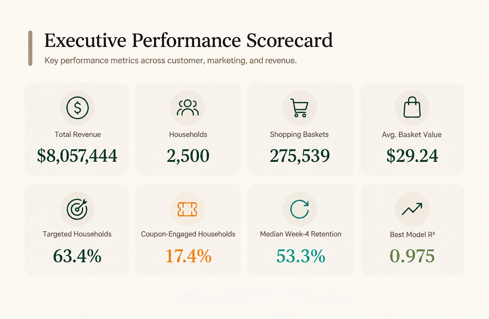

01
Customer Value
Customer value across RFM segments, highlighting differences between Champions, Loyal, At Risk, and Lost households.
Retail analytics spanning customer value, retention, campaign engagement, merchandising, cross-sell, store performance, and sales modeling.

Retail performance is shaped by customer behaviour, campaign response, product mix, and store activity, but these signals are spread across multiple datasets and are difficult to evaluate together.
The project brings these data together to understand which customers create the most value, how marketing activity relates to engagement, where retention and cross-sell opportunities exist, and what factors are associated with store-level sales performance.
How can customer, transaction, product, and campaign data be used together to improve customer targeting, retention, merchandising, and commercial performance?
Which customer groups contribute the most value and show the strongest retention?
Which campaigns and promotions generate the strongest customer engagement?
What customer, product, and store patterns can support better merchandising and sales decisions?
The analysis is designed for retail teams looking to better understand customer value, marketing engagement, and purchasing behaviour across a large transaction and loyalty dataset.
Understand customer segments, retention, campaign engagement, product relationships, and differences in commercial performance.
Identify valuable customer groups, stronger campaign opportunities, retention priorities, and cross-sell patterns that can guide targeting and merchandising decisions.
The project uses Dunnhumby retail data covering transactions, households, products, campaigns, coupons, and promotions across 102 weeks.
Transaction data is cleaned, invalid sales and quantity records are removed, and product information is joined to the purchases.
Core measures such as revenue, baskets, customer value, retention, campaign reach, and coupon engagement are calculated.
RFM, customer value, retention, and clustering are used to compare how different groups of customers shop over time.
Campaigns, coupons, promotions, stores, product categories, and basket combinations are compared to see where performance differs.
Linear Regression, Random Forest, and XGBoost are tested on store-week sales, with the results summarized in the final visuals.
The analysis moves from customer value and retention to campaign response, commercial performance, cross-sell opportunities, and store-week sales modeling.
Customer value across RFM segments, highlighting differences between Champions, Loyal, At Risk, and Lost households.
Cohort retention over the first 12 weeks following a customer's first purchase.
Customer spend compared across households that were targeted and those that were not.
Weekly revenue trends alongside the highest-revenue stores in the dataset.
Product relationships identified through department-level association rules using support, confidence, and lift.
Actual and predicted store-week sales from the final model evaluation.
Champions averaged $7,360.93 in customer value, while At Risk households averaged $896.22.
By Week 4, median retention across customer cohorts was 53.3%, showing a noticeable drop-off early in the customer relationship.
Targeted households averaged $4,491.98 in spend, compared with $1,028.54 for non-targeted households. This shows an association, not the direct effect of the campaigns.
Basket analysis found recurring relationships between categories, including Meat–Seafood (Packaged) and Deli–Pastry.
Revenue and customer reach varied across stores, showing that stores do not perform or serve customers in the same way.
Product breadth accounted for 90.5% of relative feature importance in the store-week sales model.
Focus retention efforts on Champions and Loyal customers, while testing re-engagement offers for At Risk households.
Use treatment and holdout groups to measure whether campaigns actually change customer spending or engagement.
Test strong basket relationships such as Meat–Seafood (Packaged) and Deli–Pastry through product placement, bundles, or targeted offers.
Adjust marketing and assortment decisions by store rather than using the same approach across the entire network.
Add prior sales, promotions, pricing, and calendar variables so the store-week model can be extended toward forward-looking forecasting.
The analysis is based on the available Dunnhumby data and has a few limitations that affect how the results can be used.
Campaign, coupon, display, and mailer comparisons are observational and do not measure incremental causal impact.
Customer measures cover 102 weeks, and the store analysis does not include geography, store format, operating costs, or margin data.
The store-week model uses same-period features, while the basket analysis is limited to departments rather than individual products.